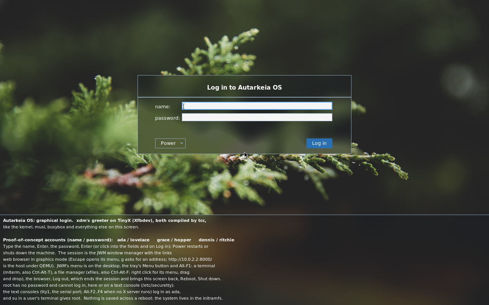
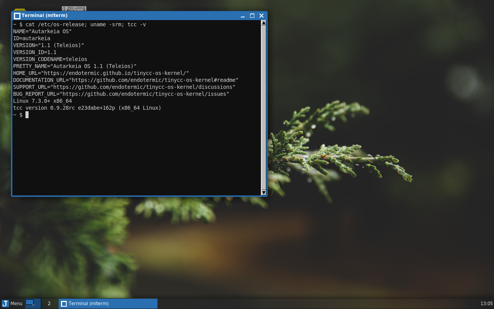
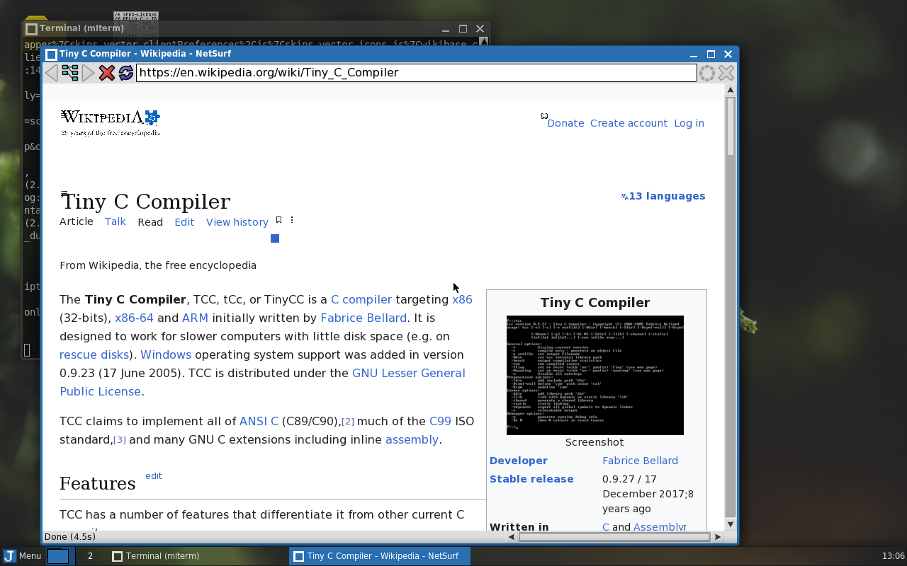
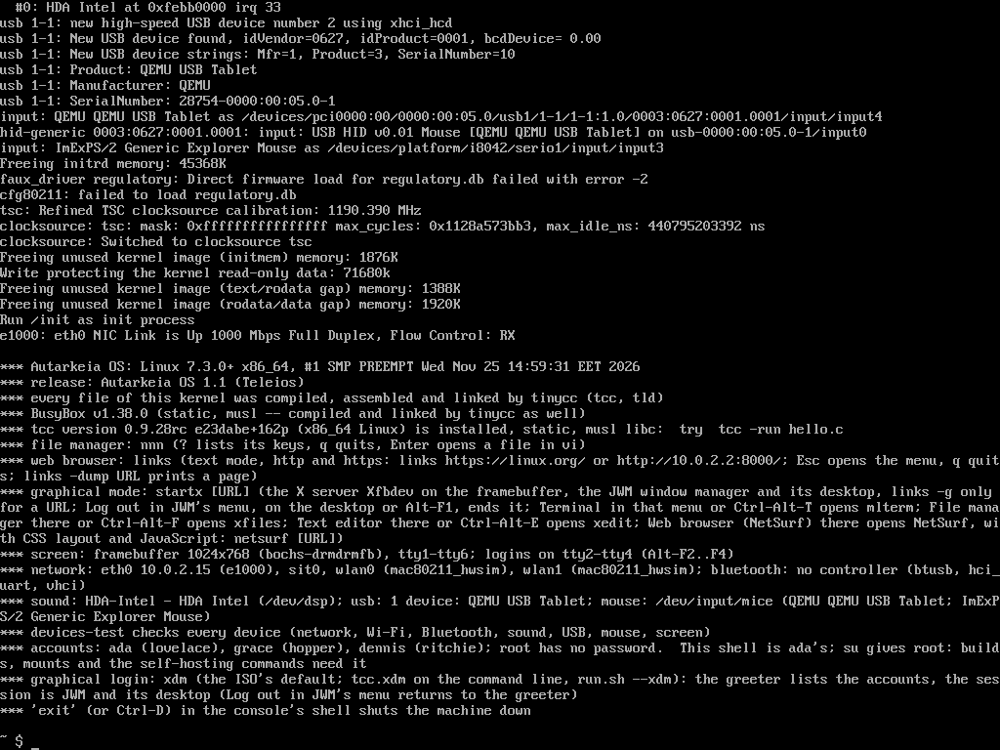

Autarkeia OS
A Linux system built entirely by the Tiny C Compiler: the kernel, musl, BusyBox, the X server, the desktop and the web browsers are compiled, assembled and linked by a patched tcc, with no GCC and no binutils. And it can rebuild itself: inside the running system, tcc compiles the kernel and tcc again.
About
Autarkeia is Greek for self-sufficiency. The project's goal is a complete, usable operating system produced by one small compiler, to find out how far tcc can be taken and to fix it where it falls short. Every compiler fix is recorded and kept as a patch series against upstream tinycc.
Autarkeia OS is an independent system, not based on another distribution. Its components
are pinned upstream sources (sources.lock), built from source by the project's
scripts.
No GCC, no binutils
tcc compiles every C and .S file of the kernel, including the
16-bit boot code; tld, the project's small linker, links it. The kernel is vanilla Linux 7.3 with no kernel patches.
Self-hosting
The self-hosting image carries the kernel, tcc, tld and GNU make sources. build-kernel
inside the guest builds a kernel that boots as "generation 2".
A desktop
The TinyX X server with Composite, the JWM window manager, an xdm login, the mlterm terminal, the xfiles file manager and the xedit editor.
Web browsers
NetSurf 3.11 with JavaScript on QuickJS, and links in text and graphics mode, both with TLS from LibreSSL.
Real hardware
Drivers for ACPI, storage, Wi-Fi (wpa_supplicant), GPUs, touchpads, Ethernet, USB, sound and EFI.
It boots to the desktop on a laptop; install.sh writes the ISO to a USB stick.
Two architectures
x86_64 and i386 (the 32-bit x86 kernel), both self-hosting. arm64 and other kernels (OpenBSD, FreeBSD, Hurd) are planned.
Download
root without a password, setuid-root programs and no security updates.
Run it in a virtual machine, or on a machine that holds nothing of value, and not on a network you do not control.
| Image | Size | For |
|---|---|---|
| autarkeia-1.1-x86_64.iso | 208 MB | 64-bit x86 PCs |
| autarkeia-1.1-i386.iso | 160 MB | 32-bit x86 PCs (i686) |
Checksums: SHA256SUMS
(sha256sum -c SHA256SUMS). Package list:
PACKAGES.md.
All releases: GitHub releases.
Requirements
- An x86_64 or i686 machine or virtual machine, BIOS or UEFI.
- 1 GB of RAM: the system runs from memory, and the ISO loads the hardware firmware too. Nothing is saved across a reboot.
- For a virtual machine: QEMU (
qemu-system-x86_64 -m 1G -cdrom autarkeia-1.1-x86_64.iso) or VirtualBox (type "Linux, Other Linux (64-bit)", 1 GB, boot from the ISO). - For a USB stick:
./install.shfrom the source repository, ordd if=autarkeia-1.1-x86_64.iso of=/dev/sdX bs=4M(this overwrites the whole drive).
Logging in
The default boot entry is a graphical login. The accounts are
ada / lovelace, grace / hopper and
dennis / ritchie; su in a terminal gives root. The boot menu also
has a text console, a serial console and the self-hosting mode.
Screenshots








Documentation
- README: building from source, running it, the desktop, self-hosting, targets and pinned versions.
- ARCHITECTURE.md: how the build works.
- PORT-NOTES.md: what it took to build Linux with tcc.
- FIX-LOG.md: every tcc fix, with its test.
- HARDWARE.md: drivers for real PCs and laptops.
- NETSURF-JS.md: JavaScript in NetSurf on QuickJS.
Support
- Discussions: questions, ideas, reports of what works on your hardware.
- Issues: bugs in the system, the build or the compiler patches.
- News and its Atom feed: new releases.